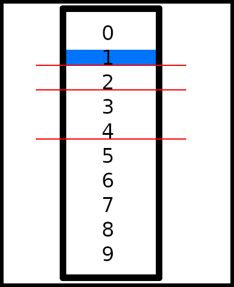

Набор Алгоритмов
Статья посвещена тому, как искать делением пополам, т.е. на двое, этот поиск часто назвают Двоичный поиск или Бинарный поиск или Алгоритм деления пополам. В ней предоставляется два описания одного алгоритма, объяснение на языке Java и блок схема алгоритма, становится понятнее только при рассмотрении всех объяснений.

Алгоритмы - Двоичный поиск или Бинарный поиск или Алгоритм деления пополам.
Содержание:
1. Объяснение на львёнке.

Рис. 1. Объяснение на львёнке.
Далее объяснение рисунка.
Допустим в определённом периметре есть лев. Алгоритм поиска таков:
- 1. Разделите периметр пополам.
- 2. Просмотрите половину периметра:
- 2.1. Если в ней есть львенок:
- 2.1.1. Разделите этот периметр пополам и выполните для него с Пункта 1. Продолжайте до достаточного обнаружения львёнка.
- 2.2. Если в ней нет львёнка:
- 2.2.1. Просмотрите другую половину и выполните для неё с Пункта 2.
2. Объяснение на массиве чисел.

Рис. 2. Объяснение на массиве чисел.
Далее объяснение рисунка.
Поиск производится по заранее отсортированному массиву чисел. Ищется число, взависимости от порядка сортировки, в зависимости от того отсортирован массив от большего к меньшему или от меньшего к большему.
Массив заранее отсортирован или хранится отсортированным, опирации вставки в который не нарушают порядка сортировки.
Рассмотрим Рис. 2. "Объяснение на массиве чисел":
- 0. Массив в примере отсортирован от меньшего к большему. Ищем индекс числа один.
- 1. Разделите выбранный массив чисел пополам.
- 2. Просмотрите число на середине, если оно равно искомому, то верните индекс. Если оно меньше искомого, повторите действия с Пункта 1 для меньшей части массива. Если оно больше искомого, повторите действия с Пункта 1 для большей части массива. Если оставшийся массив равен пустому массиву, то искомого числа в нём нет.
Пример: В массиве на Рис. 2. "Объяснение на массиве чисел" ищется число 1, массив отсортирован от меньшего к большему. Разделим массив пополам и получим число для сравнения 4. Число 4 больше 1, значит ищем дальше в меньшей части массива. Делим меньшую половину массива (первую часть) пополам и получаем число 2. Число 2 больше 1, так что делим данную пополам и смотрим на меньшую часть. Ищем серидину массива, у неё нет центра, так что берем число далее на одну позицию, это число 1. Мы нашли искомое число.
3. Объяснение на примере кода Java.
Рассмотрим код на языке Java для данного вида поиска:
import java.io.BufferedReader;
import java.io.IOException;
import java.io.InputStreamReader;
import java.util.ArrayList;
public class BinarySearchSample {
public static void main(String[] args) throws IOException {
System.out.println("Введите массив уникальных целых чисел (находит первое уникальное число):");
ArrayList<Integer> arr = readIntegers();
System.out.println("Введите искомое число:");
Integer searchInteger = readInteger();
// Сортируем начальный массив и так его храним.
sortArrBuble(arr);
System.out.println("Отсортированный массив:");
printArr(arr);
// Алгортм расчитан на уникальные целые, если оно не уникально то алгоритм не работает.
Integer searchIndex = binarySearch(arr, searchInteger);
if(searchIndex == null) {
System.out.println("Искомое число не содержиться в массиве!");
}
else {
System.out.println(String.format("Искомый индекс: %d. Нумерация от нуля.", searchIndex));
}
test();
System.in.read();
}
private static Integer binarySearch(ArrayList<Integer> arr, Integer searchInteger) {
// Переменная для хранения найденного индекса.
Integer result = null;
// Найдена ли переменная?
boolean found = false;
// exit == true при завершении поиска после обхода всего массива и не найдености искомого числа.
boolean exit = false;
// Анализируемая половина: false - левая, true - правая.
boolean half = false;
// Индекс верхней половины.
int indexTop = (arr.size() - 1);
// Индекс нижней половины.
int indexBottom = 0;
// Первая итерация?
boolean firstIteration = true;
while(!found && !exit) {
if(firstIteration) {
firstIteration = false;
}
else {
if(half) {
indexBottom = (indexTop - indexBottom) / 2 + indexBottom + 1;
}
else {
indexTop = (indexTop - indexBottom) / 2 + indexBottom - 1;
}
}
if(indexTop - indexBottom >= 0) {
if(arr.get((indexTop - indexBottom) / 2 + indexBottom).intValue() == searchInteger.intValue()) {
result = (indexTop - indexBottom) / 2 + indexBottom;
found = true;
}
else {
// Данный пример задан для сортировки от меньшего к большему:
if(arr.get((indexTop - indexBottom) / 2 + indexBottom).intValue() < searchInteger.intValue()) {
half = true;
}
else {
half = false;
}
}
}
else {
exit = true;
}
}
return result;
}
private static void test() {
Integer testCount = 10000;
ArrayList<Integer> arr = new ArrayList<Integer>(testCount);
for(Integer i = 0; i < testCount; i++) arr.add(i);
Integer failedTestNum = 0;
for(Integer i = 128; i < testCount; i++) {
Integer searchIndex = binarySearch(arr, i);
if(searchIndex.intValue() != i.intValue())
failedTestNum ++;
}
System.out.println("Алгоритм тестировался. Количество проваленных тестов: " + failedTestNum + ".");
}
private static void sortArrBuble(ArrayList<Integer> arr) {
Integer temp;
for(int i = 0; i <= arr.size() / 2; i++) {
for(int j = 0; j < arr.size() - 1; j++) {
if(arr.get(j) > arr.get(j + 1)) {
temp = arr.get(j);
arr.set(j, arr.get(j + 1));
arr.set(j + 1, temp);
}
}
}
}
private static void printArr(ArrayList<Integer> arr) {
for(int i = 0; i < arr.size() - 1; i++) {
System.out.print(arr.get(i) + " ");
}
System.out.print(arr.get(arr.size() - 1));
System.out.println();
}
private static ArrayList<Integer> readIntegers() throws IOException {
BufferedReader br = new BufferedReader(new InputStreamReader(System.in));
ArrayList<Integer> result = new ArrayList<Integer>();
String[] stringIntegers = br.readLine().split(" ");
for(int i = 0; i < stringIntegers.length; i++) {
result.add(Integer.parseInt(stringIntegers[i]));
}
return result;
}
private static Integer readInteger() throws IOException {
BufferedReader br = new BufferedReader(new InputStreamReader(System.in));
return Integer.parseInt(br.readLine());
}
}
4. Блок схема алгоритма.
Входные данные: arr — массив, в котором ищутся данные, searchInteger — искомое число.

Рис. 3. Блок схема алгоритма.
5. Преимущества и Недостатки.
Преимущества:
- Быстрый поиск с одной ищущей (анализируемой) записью.
Недостатки:
- Нужно поддерживать массив данных всегда в отсортированном виде.